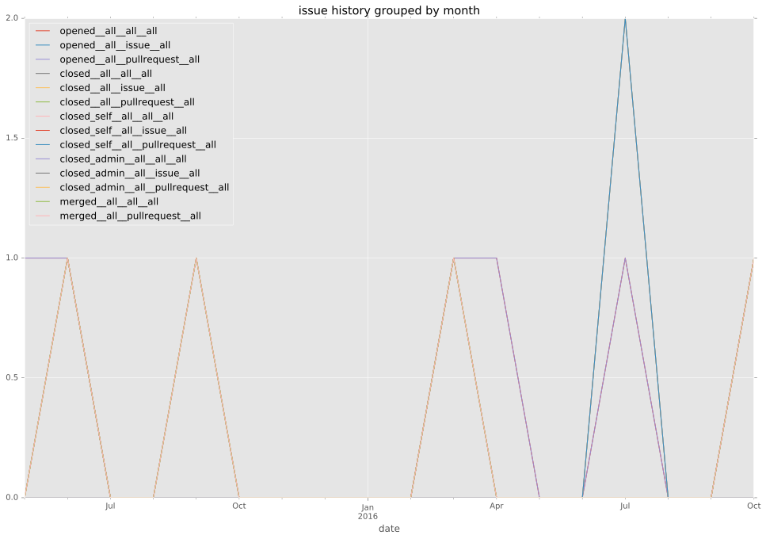

total issue counts
feature pull request: 2
bugfix pull request: 3
pullrequest: 6
new plugin: 1
issue history

days open by issue type
feature pull request
count: 3
std: 8.08290376865
min: 78
max: 92
median: 92.0
mean: 87.3333333333
bugfix pull request
count: 5
std: 7.66811580507
min: 0
max: 14
median: 0.0
mean: 5.6
all
count: 10
std: 38.6637929967
min: 0
max: 92
median: 34.5
mean: 40.0
pullrequest
count: 0
std: nan
min: nan
max: nan
median: nan
mean: nan
new plugin
count: 2
std: 0.0
min: 55
max: 55
median: 55.0
mean: 55.0
closures grouped by total days open